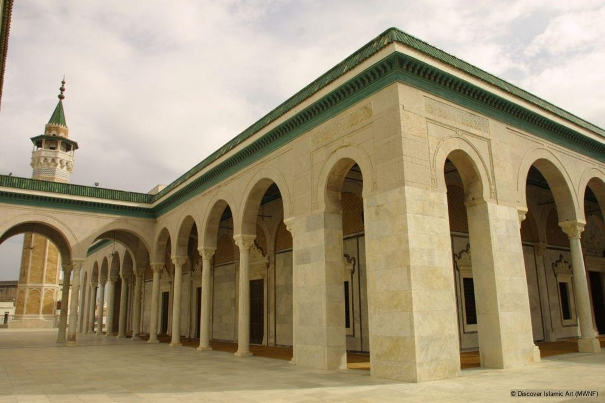
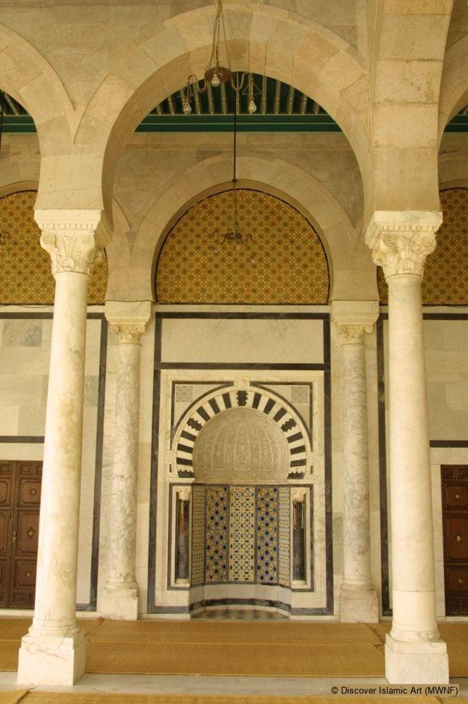

تعارف
تونس کے مدینہ کے شمال میں حلفاوین چوک پر سر بلند یہ انیسویں صدی کے آغاز کی مسجد فرانسیسی سرپرستی کے دور سے پہلے تونس میں بننے والی آخری بڑی مسجد ہے۔ اطالوی سنگ مرمر کے ستون اور دیواریں اسے یورپی اثر سے سب سے زیادہ متاثر تیونسی مسجد بناتے ہیں۔
تصاویر




تاریخ
یہ یوسف صاحب الطابع کے نام سے منسوب ہے، جو تقریباً 1765ء میں مولداویا میں پیدا ہوئے، بچپن میں غلام بنائے گئے اور 1781ء میں شہزادہ حمودہ پاشا کی خدمت میں آئے؛ 1782ء میں ان کے مہردار (صاحب الطابع) اور پھر وزیر اعظم بنے۔ انہوں نے 1808ء سے 1814ء تک معمار حاجی ساسی بن فریجہ کی نگرانی میں یہ مسجد بنوائی اور 1814ء میں اس کا افتتاح کیا۔ ستمبر 1814ء میں باردو میں ایک حملے میں زخمی ہو کر جنوری 1815ء میں وفات پا گئے: مینار 1970ء کی دہائی تک نامکمل رہا۔
فنِ تعمیر
دکانوں اور گوداموں کے اوپر، قرطاج کے کھنڈرات سے لائے گئے تراشے ہوئے پتھروں کی بنیاد پر بنی یہ مسجد چوک پر چھائی ہوئی ہے۔ ایک خم دار زینہ مشرقی دالان تک جاتا ہے، جس میں ستونوں کی دوہری قطار ہے اور جو پانچ محرابوں سے چوک کی طرف کھلتا ہے؛ ہشت پہلو مینار اس کے سرے پر ہے۔ تین دالان نماز کے ہال کو گھیرے ہوئے ہیں، جس میں 9 راستے اور 7 صفیں ہیں اور جس کی چھت نیم بیلنی محرابی ہے۔ قبلہ کی دیوار اور سامنے کی دیوار کے ساتھ دونوں آخری صفوں پر تین تین گنبد ہیں: ایک درمیان میں اور ایک ایک ہر کونے میں۔
تفصیل سے
ورچوئل میوزیم Discover Islamic Art کے مطابق کسی اور تیونسی مسجد میں مغربی اثر اتنا نمایاں نہیں۔ سنگ مرمر، جو یہاں دوسری جگہوں سے زیادہ ہے، براہ راست اٹلی کے کرارا سے منگوایا گیا۔ پتلے نالی دار ستونوں پر مرکب سر ہیں، جو ترک دور کے تیونسی نمونے کی اطالوی تعبیر ہیں؛ ہلکی سی نعل نما محرابیں کلاسیکی نعل نما شکل سے ہٹ گئی ہیں، اور چوکھٹوں پر نو باروک انداز کی ابھری نقاشی ہے۔ چینی کی ٹائلوں کے لیے صرف دیواروں کے اوپری حصے بچے ہیں۔ رنگا رنگ سنگ مرمر کا محراب اور ثابت منبر نیم گوتھک محرابچوں، پھولوں اور سنہری چھوؤں کو یکجا کرتے ہیں۔ مشرقی دالان میں گرم موسم میں نماز کے لیے ایک بیرونی محراب ہے۔
کردار اور اثر
یہ مسجد ایک بڑے مجموعے کا دل تھی جو وزیر نے حلفاوین محلے کی خدمت کے لیے بنایا: دو مدرسے، ایک بازار، ایک حمام، ایک سبیل، ایک سرائے، ان کا محل اور ان کا مقبرہ، جس میں مدرسوں کی طرح شمالی رخ سے داخل ہوا جاتا ہے۔
اہم تاریخیں
- 1808وزیر یوسف صاحب الطابع نے تعمیر شروع کی
- 1814بانی کے ہاتھوں مسجد کا افتتاح
- 1815بانی کی وفات، جو ایک سال پہلے باردو میں زخمی ہوئے تھے
- 1970مینار کو آخرکار اس کی لالٹین ملی (1970ء کی دہائی)
نمازِ جمعہ اور قرآن کی تلاوت
معلومات زائرین دیتے اور ان کی تصدیق کرتے ہیں، یا یہ کسی مذکورہ عوامی ماخذ سے لی جاتی ہیں۔ کوئی وقت گھڑا نہیں جاتا۔
زیارت
یہ سب سے پہلے نماز کی جگہ ہے: مناسب لباس پہنیں، نماز کے ہال میں داخل ہونے کے لیے جوتے اتاریں اور نماز کے اوقات سے بچیں۔ کئی بڑی مساجد میں غیر مسلم زائرین صحن میں جا سکتے ہیں، نماز کے ہال میں نہیں۔ اوقات بدلتے رہتے ہیں: موقع پر معلوم کریں۔
نقشے پر
دستاویزات اور لنکس
ماخذ
- تحریریں "تیونس کی مساجد" نے اوپر دی گئی دستاویزات (ویکیپیڈیا، قنطرہ، Discover Islamic Art، یونیسکو) کی بنیاد پر لکھیں، 09/10/2026 کو جانچی گئیں۔
- Wikidata : Q3324882 (CC0)
- تصاویر: وکیمیڈیا کامنز، ہر تصویر کے نیچے مصنف اور لائسنس۔
- « تفصیل سے » والا حصہ اور Discover Islamic Art کے نشان والی تصاویر: Museum With No Frontiers (MWNF) سے، اس کی اجازت کے ساتھ۔
- مقام: OpenStreetMap (ODbL) اور وکی ڈیٹا۔